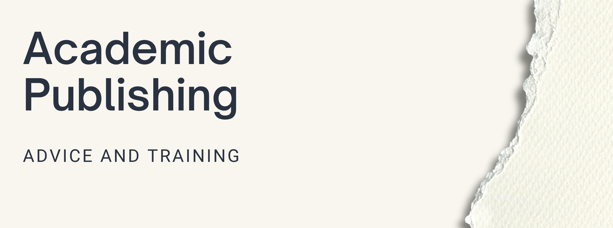

Academic Publishing
Guiding learners through the process of academic publishing, from selecting journals to writing, submitting, and peer review. Equipping learners with essential skills to navigate scholarly publishing and share their research effectively.
Academic publishing can feel overwhelming, especially for early-career researchers and graduate students. We break down the publishing process into manageable steps, providing practical guidance and support at each stage of your publishing journey.
Our approach demystifies scholarly publishing by combining theoretical understanding with hands-on practice. We help researchers develop both the technical skills and strategic thinking needed to successfully share their work with the academic community.
Journal Selection and Research Strategy
Choosing the right journal is crucial for publication success. We guide researchers through evaluating journals based on scope, impact, audience, and publication practices. This includes understanding journal metrics, identifying appropriate venues for different types of research, and developing a strategic approach to manuscript submission.
Manuscript Development and Writing
We support researchers in structuring their work for publication, from developing compelling abstracts to crafting clear methodologies and presenting results effectively. Our guidance covers adapting research for different publication formats, writing for specific audiences, and ensuring manuscripts meet scholarly standards.
Submission Process Navigation
The submission process involves multiple steps that can vary significantly between publishers. We provide practical support in preparing submission materials, understanding journal requirements, formatting manuscripts appropriately, and managing the technical aspects of online submission systems.
Peer Review and Revision
Understanding peer review is essential for publication success. We help researchers interpret reviewer feedback constructively, develop effective revision strategies, and communicate with editors professionally. This includes learning to address criticism positively and strengthen manuscripts through the review process.
Publication Ethics and Best Practices
Ethical publishing practices are fundamental to scholarly integrity. We cover topics including authorship guidelines, citation practices, data sharing requirements, and avoiding predatory publishers. Researchers learn to navigate ethical considerations while building sustainable publishing practices.
Career Development Through Publishing
Academic publishing serves broader career development goals. We help researchers understand how publication fits into their overall academic trajectory, develop publication portfolios, and use scholarly writing to build professional networks and establish expertise in their fields.
Through workshops, individual consultations, and ongoing mentorship, we support researchers at all levels in developing the confidence and competence needed to share their work effectively with scholarly communities. Our goal is to help researchers not just publish successfully, but to develop sustainable practices for ongoing scholarly communication.